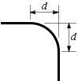

edu.rit.draw.item.DrawingItem
edu.rit.draw.item.OutlinedItem
edu.rit.draw.item.Line
edu.rit.draw.item.DrawingItem
edu.rit.draw.item.OutlinedItem
edu.rit.draw.item.Line
|
||||||||||
| PREV CLASS NEXT CLASS | FRAMES NO FRAMES | |||||||||
| SUMMARY: NESTED | FIELD | CONSTR | METHOD | DETAIL: FIELD | CONSTR | METHOD | |||||||||
java.lang.Object
public class Line
Class Line provides a DrawingItem that consists of one or more straight line segments. The line may have an Arrow at either or both ends. The line may have sharp corners or round corners. The line has an outline but no filled interior.
| If the line has round corners, the round corner distance gives the distance from where the (sharp) corner would normally be to the starting and ending points of the round corner arc, as shown in the adjoining diagram. (The round corner distance is d.) A round corner distance of 0 results in a sharp corner. In a particular line, the same round corner distance is used for every corner; that is, either all the corners are sharp or all the corners are rounded the same amount. Different lines can have different round corner distances. |  |
The static defaultStartArrow(), defaultEndArrow(), and defaultRound() methods are provided to set the default starting arrow, ending arrow, and round corner distance. If the starting arrow, ending arrow, or round corner distance is not specified, the current default starting arrow, ending arrow, or round corner distance is used.
| Field Summary | |
|---|---|
static Arrow |
NORMAL_END_ARROW
The normal ending arrow: None. |
static double |
NORMAL_ROUND
The normal round corner distance (0), signifying sharp corners. |
static Arrow |
NORMAL_START_ARROW
The normal starting arrow: None. |
| Fields inherited from class edu.rit.draw.item.OutlinedItem |
|---|
NORMAL_OUTLINE |
| Constructor Summary | |
|---|---|
Line()
Construct a new line. |
|
Line(Line theLine)
Construct a new line with the same points, outline, starting arrow, ending arrow, and round corner distance as the given line. |
|
| Method Summary | |
|---|---|
Line |
add()
Add this line to the end of the default drawing's sequence of drawing items. |
Line |
add(Drawing theDrawing)
Add this line to the end of the given drawing's sequence of drawing items. |
Line |
addFirst()
Add this line to the beginning of the default drawing's sequence of drawing items. |
Line |
addFirst(Drawing theDrawing)
Add this line to the beginning of the given drawing's sequence of drawing items. |
Line |
by(double dx,
double dy)
Add a line segment to this line. |
Line |
by(Size theSize)
Add a line segment to this line. |
Line |
clear()
Clear this line. |
static Arrow |
defaultEndArrow()
Returns the default ending arrow. |
static void |
defaultEndArrow(Arrow theArrow)
Set the default ending arrow. |
static double |
defaultRound()
Returns the default round corner distance. |
static void |
defaultRound(double theRound)
Set the default round corner distance. |
static Arrow |
defaultStartArrow()
Returns the default starting arrow. |
static void |
defaultStartArrow(Arrow theArrow)
Set the default starting arrow. |
void |
draw(Graphics2D g2d)
Draw this drawing item in the given graphics context. |
Arrow |
endArrow()
Returns this line's ending arrow. |
Line |
endArrow(Arrow theArrow)
Set this line's ending arrow. |
Line |
hby(double dx)
Add a horizontal line segment to this line. |
Line |
hby(Size theSize)
Add a horizontal line segment to this line. |
double |
height()
Returns the height of this drawing item's bounding box. |
Line |
hto(double x)
Add a horizontal line segment to this line. |
Line |
hto(Point thePoint)
Add a horizontal line segment to this line. |
Point |
nw()
Returns the northwest corner point of this drawing item's bounding box. |
Line |
outline(Outline theOutline)
Set this line's outline. |
void |
readExternal(ObjectInput in)
Read this line from the given object input stream. |
double |
round()
Returns this line's round corner distance. |
Line |
round(double theRound)
Set this line's round corner distance. |
Size |
size()
Returns the size of this drawing item's bounding box. |
Arrow |
startArrow()
Returns this line's starting arrow. |
Line |
startArrow(Arrow theArrow)
Set this line's starting arrow. |
Line |
to(double x,
double y)
Add a line segment to this line. |
Line |
to(Point thePoint)
Add a line segment to this line. |
Line |
vby(double dy)
Add a vertical line segment to this line. |
Line |
vby(Size theSize)
Add a vertical line segment to this line. |
Line |
vto(double y)
Add a vertical line segment to this line. |
Line |
vto(Point thePoint)
Add a vertical line segment to this line. |
double |
width()
Returns the width of this drawing item's bounding box. |
void |
writeExternal(ObjectOutput out)
Write this line to the given object output stream. |
| Methods inherited from class edu.rit.draw.item.OutlinedItem |
|---|
defaultOutline, defaultOutline, outline |
| Methods inherited from class edu.rit.draw.item.DrawingItem |
|---|
boundingBox, c, e, n, ne, s, se, sw, w |
| Methods inherited from class java.lang.Object |
|---|
clone, equals, finalize, getClass, hashCode, notify, notifyAll, toString, wait, wait, wait |
| Field Detail |
|---|
public static final Arrow NORMAL_START_ARROW
public static final Arrow NORMAL_END_ARROW
public static final double NORMAL_ROUND
| Constructor Detail |
|---|
public Line()
public Line(Line theLine)
theLine - Line.
NullPointerException - (unchecked exception) Thrown if theLine is null.| Method Detail |
|---|
public static Arrow defaultStartArrow()
public static void defaultStartArrow(Arrow theArrow)
theArrow - Default starting arrow.
NullPointerException - (unchecked exception) Thrown if theArrow is null.public static Arrow defaultEndArrow()
public static void defaultEndArrow(Arrow theArrow)
theArrow - Default ending arrow.
NullPointerException - (unchecked exception) Thrown if theArrow is null.public static double defaultRound()
public static void defaultRound(double theRound)
theRound - Default round corner distance.
IllegalArgumentException - (unchecked exception) Thrown if theRound is less than 0.public Size size()
size in class DrawingItempublic double width()
width in class DrawingItempublic double height()
height in class DrawingItempublic Point nw()
nw in class DrawingItempublic Line outline(Outline theOutline)
outline in class OutlinedItemtheOutline - Outline, or Outline.NONE.
public Line clear()
public Line to(double x,
double y)
x - Endpoint's X coordinate.y - Endpoint's Y coordinate.
public Line to(Point thePoint)
thePoint - Endpoint.
NullPointerException - (unchecked exception) Thrown if thePoint is null.public Line hto(double x)
x - Endpoint's X coordinate.
NullPointerException - (unchecked exception) Thrown if there is no previous endpoint.public Line hto(Point thePoint)
thePoint - Endpoint.
NullPointerException - (unchecked exception) Thrown if thePoint is null. Thrown if
there is no previous endpoint.public Line vto(double y)
y - Endpoint's Y coordinate.
NullPointerException - (unchecked exception) Thrown if there is no previous endpoint.public Line vto(Point thePoint)
thePoint - Endpoint.
NullPointerException - (unchecked exception) Thrown if thePoint is null. Thrown if
there is no previous endpoint.
public Line by(double dx,
double dy)
dx - X distance.dy - Y distance.
NullPointerException - (unchecked exception) Thrown if there is no previous endpoint.public Line by(Size theSize)
theSize - Distance.
NullPointerException - (unchecked exception) Thrown if theSize is null. Thrown if
there is no previous endpoint.public Line hby(double dx)
dx - X distance.
NullPointerException - (unchecked exception) Thrown if there is no previous endpoint.public Line hby(Size theSize)
theSize - Distance.
NullPointerException - (unchecked exception) Thrown if theSize is null. Thrown if
there is no previous endpoint.public Line vby(double dy)
dy - Y distance.
NullPointerException - (unchecked exception) Thrown if there is no previous endpoint.public Line vby(Size theSize)
theSize - Distance.
NullPointerException - (unchecked exception) Thrown if theSize is null. Thrown if
there is no previous endpoint.public Arrow startArrow()
public Line startArrow(Arrow theArrow)
theArrow - Starting arrow.
NullPointerException - (unchecked exception) Thrown if theArrow is null.public Arrow endArrow()
public Line endArrow(Arrow theArrow)
theArrow - Ending arrow.
NullPointerException - (unchecked exception) Thrown if theArrow is null.public double round()
public Line round(double theRound)
theRound - Round corner distance.
IllegalArgumentException - (unchecked exception) Thrown if theRound is less than 0.public Line add()
add in class OutlinedItemNullPointerException - (unchecked exception) Thrown if there is no default drawing.Drawing.defaultDrawing()public Line add(Drawing theDrawing)
add in class OutlinedItemtheDrawing - Drawing.
NullPointerException - (unchecked exception) Thrown if theDrawing is null.public Line addFirst()
addFirst in class OutlinedItemNullPointerException - (unchecked exception) Thrown if there is no default drawing.Drawing.defaultDrawing()public Line addFirst(Drawing theDrawing)
addFirst in class OutlinedItemtheDrawing - Drawing.
NullPointerException - (unchecked exception) Thrown if theDrawing is null.
public void writeExternal(ObjectOutput out)
throws IOException
writeExternal in interface ExternalizablewriteExternal in class OutlinedItemout - Object output stream.
IOException - Thrown if an I/O error occurred.
public void readExternal(ObjectInput in)
throws IOException,
ClassNotFoundException
readExternal in interface ExternalizablereadExternal in class OutlinedItemin - Object input stream.
IOException - Thrown if an I/O error occurred.
ClassNotFoundException - Thrown if any class needed to deserialize this line cannot be found.public void draw(Graphics2D g2d)
draw in class DrawingItemg2d - 2-D graphics context.
|
||||||||||
| PREV CLASS NEXT CLASS | FRAMES NO FRAMES | |||||||||
| SUMMARY: NESTED | FIELD | CONSTR | METHOD | DETAIL: FIELD | CONSTR | METHOD | |||||||||